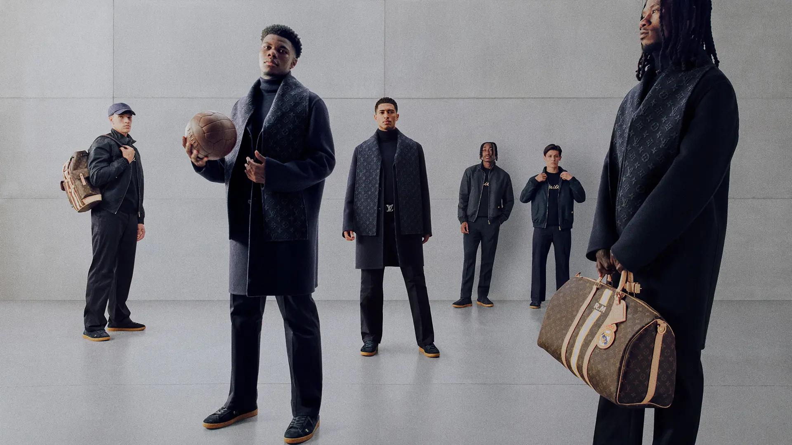

Beyond the Runway: How Louis Vuitton Is Entering New Cultural Worlds

Luxury has traditionally been associated with exclusivity, heritage, and craftsmanship. However, maintaining that identity doesn't mean staying within the same cultural boundaries. Louis Vuitton is demonstrating how a luxury brand can enter new subcultures without compromising what makes it desirable.
Its partnership with Real Madrid is a fascinating example. Two globally recognized names, each associated with prestige, history, and excellence, have joined forces in a relationship that goes beyond conventional advertising. By dressing the club's players in formalwear and providing travel accessories, Louis Vuitton integrates itself into football culture without trying to become a sportswear brand.
Formula 1 represents another important opportunity. Through its partnership with the sport and its distinctive trophy trunks, Louis Vuitton has become part of the spectacle surrounding some of motorsports most celebrated moments. Its ties to prominent athletes and other sporting competitions further reinforce the link between luxury, ambition, and achievement.
What makes this strategy particularly interesting is that Louis Vuitton is not necessarily making its products more accessible. Instead, it is making its brand more culturally visible. Football supporters, motorsport enthusiasts, and younger audiences who might not traditionally engage with luxury fashion are increasingly encountering Louis Vuitton through something they already care about.It also offers a long-term commercial opportunity. Todays sports fan may become tomorrows luxury customer. By building these associations early, Louis Vuitton builds familiarity and aspiration across generations while retaining its existing clientele.
The broader lesson is that expanding into new markets or subcultures does not always require a brand to reinvent itself. Sometimes, the opportunity lies in finding new environments where its existing identity can resonate.
Louis Vuitton is not abandoning luxury to enter the world of sport. It is bringing luxury into the world of sport.